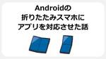
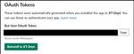
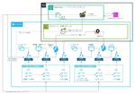
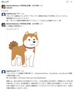

ENGINEERING BLOG ドコモ開発者ブログ
https://nttdocomo-developers.jp/
ENGINEERING BLOG ドコモ開発者ブログ
フィード

同期現象の数理モデルをPythonで実装してみた
ENGINEERING BLOG ドコモ開発者ブログ
はじめに 本記事をご覧いただきありがとうございます。ドコモアドベントカレンダー8日目の記事になります。初めまして。NTTドコモR&D戦略部新入社員の武田です。業務では主に弊社の先進技術を活用したメタコミュニケーションサービス「MetaMe®」（メタミー）の技術実装を担当しています。 私は学生時代、人々の動きや行動パターンを実データから分析し、災害時の安心・安全な避難を実現するためのシミュレーションや最適化に関する研究に従事しておりました。現在仮想空間内においても「ユーザの流れ」や「ユーザの行動」に注目し、技術実装を行っています。群衆の動きに関するサーベイを進める中で、「同期現象」に関する論文を…
15時間前

低コストクラウドレンダリングの発表で社外LT会に参加してみた〜Unreal Engine KYUSHU〜
ENGINEERING BLOG ドコモ開発者ブログ
本記事は第2回 Unreal Engine KYUSHU LT会 in 鹿児島への参加報告とそこで発表してきた内容を解説します。 導入 １年目からずっとR&Dで勤務しており、Unreal Engineに関わる業務をさせていただいていて、今４年目となりました。 アドカレについては３回目の参戦です！ 毎年UEについて記事を書いている人となっております。 【2021年】Unreal Engine初心者だけどマルチプレイしたい！ ~サーバビルド環境構築手順まとめてみた~ 【2023年】Unreal EngineとWebSocketを組み合わせて、オープン日本語LLM（Rinna）を使ってみる そんなこ…
2日前

Nvidiaドライバをアップデートするとネットワークにつながらなくなる話
ENGINEERING BLOG ドコモ開発者ブログ
はじめに こんにちは。サービスイノベーション部に所属しております。普段の業務では機械学習を用いたマーケティング効率化に取り組んでいます。 訴求効果の高いユーザを推定するためにTransformerを使った独自の機械学習モデルを使っています。 Transformerベースなのでエンコーダ学習とデコーダ学習の2回必要で、クラウドを使うとなると結構お金がかかるのでオンプレのGPUサーバを使っています。 GPUサーバを運用しているとNvidiaドライバなどのソフトウェアスタックをアップデートすることがありますが、罠にはまったのでその体験談（トラブルシューティング）をご紹介します。同じ罠にはまらないよう…
2日前

dbtとTableauで安定したデータパイプラインとダッシュボードを運用できるようになった話
ENGINEERING BLOG ドコモ開発者ブログ
1. はじめに 2. 堅牢性を強化に至った背景 対象のダッシュボード ダッシュボードが抱えていた課題 コード管理の煩雑さ データソース由来の品質問題の波及 3. 課題への対処方針 コード管理の煩雑さの解消方針 より高いデータ品質の確保 参考：dbtとは？ 4. dbtを用いたダッシュボード用パイプラインの構築 汎用フォーマットの採用 汎用フォーマット(抜粋) レイヤ構造 実装のポイント コードサンプル 5. Tableauの実装方針の見直し KPIのフェーズに合わせた実装方針 UIを用いた設定要素の極力排除 安定性強化時の実装ルール フィルタの式設定に関して 6. 見直しの結果と今後の課題 G…
3日前

初学者むけ★スマホのつながる仕組み
ENGINEERING BLOG ドコモ開発者ブログ
NTTドコモ R&D Advent Calendar 2024 の5日目の記事です。 自己紹介 ドコモユーロ研で所長をやっています、田中威津馬（たなか・いつま）と申します。ユーロ研はドイツミュンヘンにあり、通信規格の国際標準化の拠点として、現在は６Gとネットワーク仮想化基盤の研究開発と国際標準化を中心にとりくんでいます。世界各国の事業者・ベンダが採用し世界８０億人のひとたちの暮らしを支える技術を創り、世界に貢献をしたい・・そんな思いで日々仕事に邁進しています。（ユーロ研のとりくみはこちらのNTT技術ジャーナルの記事も見てみてください！） 今日のテーマと、この記事を誰に読んでほしいか？ この記事…
3日前

Google Analytics 4をStreamlitに導入してグロースできる環境を実現してみた 1
1
ENGINEERING BLOG ドコモ開発者ブログ
自己紹介 NTTドコモ データプラットフォーム部（以下DP部）藤平です。 システムやアプリケーションはリリースしたら終わりではなく、利用者の声や利用状況に合わせたUIの改善など日々成長させていく必要があります。 DP部が提供するデータアプリケーションプラットフォームではStreamlitで約100アプリを提供していますが、各々のアプリを成長させるために利用状況を分析できる環境が必要でした。 そこで、ドコモで10年以上Google Analytics/Google Tag Managerに携わっていただいている、協力会社の大畑さんに実装をお願いしました。 以下、大畑さんに本取り組みの内容をご紹介…
4日前

3GPP RNAAのご紹介
ENGINEERING BLOG ドコモ開発者ブログ
はじめに NTTドコモ ６Ｇテック部の魚島です。 本日はモバイル通信規格を規定している国際標準化プロジェクトである3GPPでドコモがリードし、規格化したRNAA(Resource owner-aware Northbound API Access)の技術についてご紹介いたします。 私は現在3GPP SA6(3GPPネットワークを活用するアプリケーション向けのアーキテクチャを中心に仕様検討するワーキンググループ)でRNAAと関連するCAPIFのガイドラインを策定するアイテム(CAPIF_EXT)のラポータ(3GPPでの議論をリードする役割)を務めています。 はじめに モバイル通信分野における「N…
5日前

Androidの折りたたみスマホにアプリを対応させた話
ENGINEERING BLOG ドコモ開発者ブログ
記事を開いてくださりありがとうございます はじめに ドコモから発売されている折りたたみスマホ 最初の課題：【Fold】アプリが起動できない 2番目の課題：【Flip】端末を回転・開閉するとアプリが表示できなくなる 3番目の課題：【Flip】再起動してほしくない画面でアプリが再起動する おわりに はじめに はじめまして、こんにちは。 NTTドコモ 第二プロダクトデザイン部の鈴木美帆です。 全くの未経験からコンシューマ向けのアプリ開発担当に配属され、早1年半。 何気なく使っていたアプリケーションの裏側は、こんなにも複雑だったのかと日々驚かされています。 そんな折、Androidの折りたたみスマホに…
6日前
Slack botで業務改善してみた 1
ENGINEERING BLOG ドコモ開発者ブログ
はじめに ドコモの私のチームで開発しているSlack botとそれを用いた業務改善についてご紹介します。 最近ではSlackに限らず種々のモダンなツールを業務で活用している方も多いでしょう。私のチームでもSlackやConfluence、その他いろいろなOSSを使って業務改善を行っています。特にSlackはAPIも豊富で、日々の業務でほぼ常時使い倒しているからこそいろいろカスタマイズすることで業務改善できるだろう、と目を付けたわけです。 この記事では、botの作り方について簡単に触れつつ、例えばどんな機能をbotで実装したのかご紹介します。「ほかにもこんな機能を実装すると便利だよ！！」というア…
6日前

【Slack API初心者向け】スレッドで「いいね」数が多いユーザーを集計してみた
ENGINEERING BLOG ドコモ開発者ブログ
はじめに NTTドコモ クロステック開発部の中村圭佑です。普段の業務では画像認識や生成AIに関する研究開発を行っています。今回はSlack APIを使ってスレッドで「いいね」数が多いユーザーを集計するツールをpythonとSlack APIで作ってみました。同じような記事が他の言語(Node.js&TypeScript等)だとありますが、python版のHow toとして参考になればと思います。 概要 Slackは多くのビジネスでチームコミュニケーションを支える重要なツールとして活用されています。当社も例外ではありません。その中で、ユーザーが「いいね」や他の絵文字リアクションを使ってメッセージ…
7日前

MLOpsパイプラインをSnowflakeのみで実現してみた 1
ENGINEERING BLOG ドコモ開発者ブログ
1. 概要 2. 構築したMLOpsパイプライン 3. 実装におけるポイント 3.1. Pythonストアドプロシージャ 3.2. Snowflake TaskによるDAG実装 3.3. 外部ステージを使ったモデル管理 4. 切り替え効果 5. 今後に向けて 1. 概要 NTTドコモ データプラットフォーム部の外山です。私たちのチームでは、4000万規模のユーザーを対象とした機械学習モデルを計50本開発・運用しており、効果的なマーケティングやプロダクト改善を実施する事業部を支えています。 これまで、AutoML製品のDataRobotを核にMLOpsパイプラインを構築していましたが、Snowf…
7日前

新規ビジネスアイデア創出のため、社内でVLMと画像生成が気軽に使えるSlackベースのシステムを作ってみた
ENGINEERING BLOG ドコモ開発者ブログ
はじめに NTTドコモ クロステック開発部の福島&井手&小原&中村圭佑です。普段の業務では画像認識や生成AIに関する研究開発を行っています。今回は社内でVLMと画像生成が気軽に使えるシステムを作ってみたので紹介したいと思います。Slackをインターフェースとした比較的シンプルなシステムなのでぜひご覧ください。 開発の背景 目的は大きく分けて3つあります。 社内での生成系AIの普及とアイデア創出 この界隈にいるとLLMをはじめとした生成系AIの利用が当たり前な雰囲気を感じますが、現実はそうではないのです。R&Dや日常的にAIに触れている人間以外は「名前は知ってるけど使ったことない」や「なんか凄そ…
8日前
国際学会SIGSPATIALワークショップの位置情報予測コンペHumob2024 ドコモ3位入賞解法＆アメリカ現地参加レポート
ENGINEERING BLOG ドコモ開発者ブログ
NTTドコモ R&D Advent Calendar 2024 の1日目の記事です。 はじめに NTTドコモ クロステック開発部の鈴木明作です！ こちらの記事では、国際学会SIGSPATIAL 2024のワークショップで開催されたユーザの位置情報予測コンペであるHumob challenge 2024にドコモチームとして参加して3位入賞（GEO-BLEU部門）することが出来たため、入賞解法を紹介します。 またアメリカ アトランタで開催された国際学会SIGSPATIAL 2024の現地参加の様子もまとめています。 SIGSPATIAL概要 SIGSPATIALは、位置情報の知的データ処理、データ…
8日前

3GPPの6G標準化がはじまりました
ENGINEERING BLOG ドコモ開発者ブログ
当記事はドコモによる3GPPでの6G標準化活動の記事です。 はじめに 3GPP SA1ってどんなグループ？ SA1での6Gの進捗状況 ドコモの活動 おわりに はじめに こんにちは！NTTドコモ 6Gテック部の黒岩と山内です。今回は、3GPP SA1にてはじまった6G標準化の状況、そのなかでドコモはどんな活動をしているのかご紹介します。 3GPPとは何か、どんなことを議論しているのか、などの基本的な情報はこちらの記事にまとまっているので、ぜひこちらも読んでみてください。 SA1での6G検討開始を記念して作製されたバッジ 3GPP SA1ってどんなグループ？ さて、移動体通信の国際標準仕様を策定し…
24日前
データ分析コンペ KDDCUP 2024 OAG-IND 入賞解法の紹介
ENGINEERING BLOG ドコモ開発者ブログ
TL;DR NTT DOCOMO R&Dは，KDDCUP2024 OAG-INDタスクにおいて380チーム中6位入賞しました． KDD2024/KDDCUP2024に関する情報及び現地レポートについては，こちらの記事をご覧ください． 本記事では，OAG-INDタスクにおけるNTT DOCOMO R&Dの解法をご紹介します． NTT DOCOMO R&Dの解法をより詳細に知りたい方は，ソースコード及び論文をご参照ください． ソースコード：Link / 論文：Link OAG-INDの順位表 はじめに NTT DOCOMO R&D サービスイノベーション部 Principal Data Scien…
25日前
6Gの意義：ドコモが考える未来のネットワークとその価値
ENGINEERING BLOG ドコモ開発者ブログ
はじめに こんにちは、NTTドコモ 6Gテック部の久米です。 最近のテクノロジーの進化はすごいスピードですよね。スマートフォンが普及して、インターネットが生活の一部になっている今でも、5Gのネットワークにはまだ解決すべき課題が残っているんです。そこで、「6G」という次世代のネットワークがどのように問題を解決して、どんな新しい価値をもたらすのか。ドコモがめざしている6Gの意義をご紹介します。 はじめに 6Gの意義 1. Sustainability 2. Efficiency 3. Customer Experience 4. NW for AI 5. Connectivity Everywhe…
1ヶ月前
データのつながりを解き明かす！Graph Embeddingの考え方と適用例の紹介
ENGINEERING BLOG ドコモ開発者ブログ
はじめに こんにちは、サービスイノベーション部の山路です。 普段の業務ではデジタルマーケティングに関する技術検討や研究開発を行っています。本記事では、近年取り組んでいるグラフデータを活用したレコメンド技術に関して、その根幹となるGraph Embeddingの考え方や適用例について簡単にですがご紹介します。 はじめに 本記事の対象読者 Graph Embeddingについて グラフの利点 Embedding（埋め込み表現）の利点 本記事で取り扱うGE手法 手法概要 Node2Vec 実装例 GCN 実装例 Knowledge Graph Embedding 実装例 GE手法の適用例 ノード分類…
1ヶ月前
「引用論文の影響度合いを予測せよ」：データ分析コンペKDDCUP2024 OAG-PST 8位入賞解法紹介
ENGINEERING BLOG ドコモ開発者ブログ
TL;DR NTTドコモ R&Dチームはデータ分析のトップカンファレンスであるACM KDD主催のデータ分析コンペKDDCUP2024 に参加し、Open Academic Graph (OAG) Challenge部門のTask3 Paper Source Tracing(PST) コンペにおいて 8位に入賞しました。 PSTコンペは、論文引用関係のグラフデータを用いて、論文が引用している複数の引用論文を元論文に影響を与えた度合い順に並び替えるタスクになります。 ドコモチームの解法では2ステージモデルを採用し、SciBERTモデルと複数の2値分類モデルをスタッキングした手法を実装しました。手…
1ヶ月前
データ分析コンペKDDCUP 2024 OAG-AQA 6位入賞解法の紹介
ENGINEERING BLOG ドコモ開発者ブログ
TL;DR データ分析コンペであるKDDCUP 2024 OAG-AQA にて6位 入賞したので、入賞解法を紹介します。 KDD概要と現地参加した発表の様子はこちらの記事をご覧下さい。 はじめに NTTドコモ クロステック開発部の鈴木明作です！ ドコモR&Dでは、データマイニング国際学術会議であるKDDで開催されているKDDCUPに毎年参加しており、 KDDCUP 2024 OAG-Challengeの一つであるOAG-AQA(Open Academic Graph - Academic Question Answering)にて、約300チームの中で6位入賞することができました。 この記事で…
2ヶ月前
KDDCUP2024に入賞したので現地でポスター発表してきました
ENGINEERING BLOG ドコモ開発者ブログ
データ分析コンペであるKDD2024にて、ドコモの2チームが3つのタスクで入賞(6位・6位・8位)しました。手法詳細は以下をご覧ください タスク１nttdocomo-developers.jp タスク２nttdocomo-developers.jp タスク３nttdocomo-developers.jp 昨年度のKDD2023の様子はこちら nttdocomo-developers.jp 私たちの成果はテクニカルジャーナルおよび表彰のページにも掲載されていますので、ぜひご覧ください 本記事では今回参加した国際学会であるKDD2024について、現地の様子をメインに紹介します KDDとKDDCUP…
2ヶ月前
モバイルネットワーク×AI ～2024秋～
ENGINEERING BLOG ドコモ開発者ブログ
はじめに こんにちは、6Gテック部の谷崎です。 近年、AI技術の発展が目覚ましい中で、モバイルネットワークとAIの融合も急速に検討が進んでいます。 この記事では、モバイルネットワーク×AIに関する最新の業界動向について解説します。 標準化議論におけるAI/ML議論と取組 移動通信システムの仕様の規格策定を行う国際的な標準化団体である3GPP(3rd Generation Partnership Project)では、現在Rel-19の検討が行われていますが、Rel-18からAI/MLに関する検討が始まりました。 Rel-18では、AI/ML技術を無線インタフェースおよび無線アクセスネットワーク…
2ヶ月前
3GPPの副議長に当選した話
ENGINEERING BLOG ドコモ開発者ブログ
当記事はドコモ社員が国際標準化団体「3GPP」の副議長に当選したことに関する振り返りや、キャリアについての内容となります。 １．はじめに ２．そもそも3GPPって何？ ３．3GPP標準化担当者の仕事とは？ ３-１．国際標準化担当というお仕事のミッション ４．国際標準化会議での苦労とそこで学んだもの ４-１．フィジカルにもメンタルにも強くあれ ４-２．オフラインでの仲間づくりは大事 ４-３．リーダー役の経験 ５．副議長就任とキャリアについて ５-１．会議参加者から会議のリーダー役に ５-２．副議長としての自分のスタイル・工夫 ５-３．キャリアパスについて ６．【あとがき】6Gの国際標準化活動に向…
3ヶ月前
フィールテック技術で切り拓く、新しいコミュニケーションの形
ENGINEERING BLOG ドコモ開発者ブログ
ドコモ開発者ブログ編集担当の早川です。本記事は昨年公開した社員インタビュー記事の第2弾になります。 今回は、綾瀬はるかさんのCMでお馴染みの触覚共有技術「フィールテック®」の共同研究開発に携わる慶應義塾大学の梅原さんとドコモの石川さんに、ここだけのぶっちゃけ話も含む熱い想いを聞いてきました！ （※撮影・取材は一般公開されていないドコモ本社内設備で実施しています。) 目次 プロフィール フィールテック®技術について 大学と企業の共同研究について フィールテック®技術にかける想い プロフィール ゲスト：梅原 路旦 (ウメハラ ロダン)さん 慶應義塾大学大学院メディアデザイン研究科メディアデザイン専…
5ヶ月前
Snowflake × dbtー75万円が溶けた「最恐」から「最強」のデータパイプラインができるまでー
ENGINEERING BLOG ドコモ開発者ブログ
1.概要 2.構築したdbt実行環境 3.最恐に至る道 4.最強に至る道 4-1.Snowflakeへの実行制御 4-2.並列処理の理解 4-3.クエリタグの設定 4-4.その他 5.まとめ 1.概要 NTTドコモ データプラットフォーム部(以下DP部)の外山です。 NTTドコモではプロダクトの改善及びシームレスなマーケティング施策を実施するために、全社でデータ活用を進めていますが、その実現において利用しやすいデータがあることは欠かせません。 それに関し、前回のブログでは、まずは、「イシューから始めよ」に則り、初期段階では解決の質にはこだわらず、分析者が利用しやすいデータを高速に整備するための…
6ヶ月前
ShowNet 2024 展示紹介 ～NTTグループ先端5G技術を結集したShowNetへの貢献～
ENGINEERING BLOG ドコモ開発者ブログ
はじめに モバイルネットワークにおけるこれまでの挑戦 専用ハードウェアから仮想化を経てクラウドへ クラウドとオンプレの選択と戦略：ハイブリッドクラウドへ ネットワークスライシング Interop Tokyo 2024 ShowNet における取組み ①オンプレミス版EKSであるEKS Anywhere上に構築されたUPF「UPF on EKS Anywhere」 ②プログラマブル プロセッサであるNVIDIA DPU上に構築されたUPF「DPU offloaded dUPF」と5GConAWSの相互接続 ShowNet でのUPF性能検証 なぜShowNetに性能検証にチャレンジするのか ドコ…
6ヶ月前
インターン体験記 in 画像認識チーム
ENGINEERING BLOG ドコモ開発者ブログ
こんにちは！NTTドコモ サービスイノベーション部の画像認識チームです。 NTTドコモでは、8/28～9/8に現場受け入れ型インターンシップを実施しました。今回のインターンシップは、リモートと現地のハイブリッドの実施となり、参加者はチームに配属された後、2週間の業務体験をしていただきました。 今回は、インターンシップに参加された藤井さんに感想を書いて頂いたのでご紹介したいと思います。 はじめに 8月28日~9月8日の現場受け入れ型インターンシップに参加した藤井 野枝子です。 大学の研究室では、Vision-Languageモデルを用いた日本語の画像キャプション生成に関する研究に取り組んでいます…
9ヶ月前
スバラしき逆行列の世界
ENGINEERING BLOG ドコモ開発者ブログ
はじめに NTTドコモ サービスイノベーション部の中村圭佑です。普段の業務では画像認識や生成系AIに関する研究開発を行っています。ネット上の日本語記事で数値的な逆行列の計算方法を網羅した記事が少ないなぁと感じたので備忘録的に書いておこうと思います。今回はプログラムと簡単な説明を添えて紹介していきたいと思います。一般的に使われるロバストな手法とそうでないものを分けて示します。逆行列一つとっても様々な計算方法があるため、とても面白いですヨ。 何故、逆行列を計算する必要があるのか？？？ 逆行列の計算は数学、工学、科学、経済学など多岐にわたる分野で重要な役割を果たしています。逆行列を理解し計算すること…
10ヶ月前
NTTドコモアドベントカレンダー2023が無事に完走したので振り返ってみる
ENGINEERING BLOG ドコモ開発者ブログ
はじめに こんにちは。NTTドコモサービスイノベーション部の杉山です。 今年からドコモ開発者ブログの運営にジョインすることになりました。 NTTドコモでは例年12月にアドベントカレンダーを自社メディアであるドコモ開発者ブログに掲載する形で開催しています。 (アドベントカレンダーは12月1日から25日までの25日間、毎日記事を投稿する取り組みです) 自分は11月に運営に参加したので、運営メンバーとしてのはじめての取り組みが今年度のアドベントカレンダーになりました。 そんな自分がNTTドコモアドベントカレンダー2023の振り返りをしていこうと思います。 数字で見る振り返り 投稿記事数 昨年は39記…
10ヶ月前
CNNとメルスペクトログラムを用いて音楽感情認識を試してみた
ENGINEERING BLOG ドコモ開発者ブログ
はじめに はじめまして、NTTドコモ サービスイノベーション部、2年目社員の韓です。 今回、アドベントカレンダーのラスト記事を書かせていただきます！初めてのブログ投稿のため、お手柔らかにお願いいたします<m(__)m> 本記事では、画像認識の分野で良く使われるCNN（畳み込みニューラルネットワーク）と、音楽データのメルスペクトログラム（人の聴覚に基づいた尺度によるスペクトル画像）を用いて、音楽の感情認識を画像分類問題として解いてみたことについて書きたいと思います。 また、この記事は業務DXを追求する観点で、LLM（Large Language Models）をフル活用して執筆してみました。読み…
1年前
AWS re:Invent 2023 Las Vegasの参加報告と生成AI, データ分析, ETL系の新サービスを触ってみる！
ENGINEERING BLOG ドコモ開発者ブログ
NTTドコモ R&Dイノベーション本部 サービスイノベーション部 ビッグデータ基盤担当 3年目社員の小澤です. 普段の業務では, 1日数百TBにわたる弊社のLTE/5GSA基地局の通信制御信信号をリアルタイムで分析可能とし, ネットワークエリア品質向上に役立つデータへ変換するシステムの研究開発業務に携わっており, いわゆるデータエンジニア的な業務に携わっております. 2年前は自身の業務に関連するロードバランサ関連技術やOSS, 昨年は, 東京ディズニーシーの混雑分析について投稿しました.今年は, 11/27〜12/2にアメリカのラスベガス現地で参加させていただいたAWS:re:Invent20…
1年前